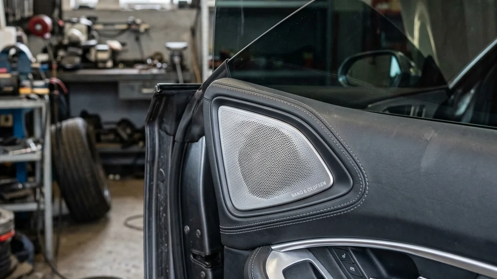

Upgrading your vehicle is an addiction. You start with a simple detail, maybe some new wheels, and suddenly you're looking into precision car audio and tint. While heavy bass and crystal-clear highs transform your daily commute, many people overlook how vital window tint is to protecting that expensive audio investment.
If you're dropping serious money on a custom sound system, you need to think about the environment those electronics are sitting in. The interior of a car parked in the Riverside sun can easily exceed 140 degrees.
Heat Rejection Protects Electronics
Intense heat and direct UV exposure are the absolute worst enemies of speaker cones, foam surrounds, and dashboard head units. When you invest in precision car audio and window tint simultaneously, you are shielding your high-end electronics from thermal degradation.
A premium ceramic tint blocks up to 99% of UV rays and dramatically reduces infrared heat. This means your expensive door speakers and dashboard tweeters aren't baking in an oven all day. They will last years longer and perform better without the risk of heat-warped components.

A Quieter Cabin for Better Sound
Believe it or not, high-quality window film can actually improve the acoustics of your vehicle. Thicker, multi-layered ceramic films add a slight amount of mass to the glass, which can help dampen high-frequency wind noise and exterior road rattle.
When you combine precision car audio and tint, you're not just making your car look better. You're creating a cooler, quieter, and more protected listening environment. Before you install that new subwoofer, make sure your cabin is protected by Riverside Tints.